Велопробег Подкаменная-Шаманка-Смоленщина (SP2)
Как это надо делать...
( 9 мая 2007 )
Сначала надо собрать всех желающих. Загрузиться в последний вагон электрички, отбывающей
из Иркутска в 9:30 утра. Из Слюдянки надо выехать в 8 утра, выходить в Большом Луге,
прикупить пива помирающим от жажды товарищам и минут полчаса подождать иркутскую
электричку. Потом залезть в последний вагон и офигеть (!) от количества знакомых лиц и
натыканых всюду рам и колес. Раздать пиво и приходить в себя до Подкаменной. На станции
переходить шпалы и шпарить по грунтовке до федеральной трассы М55. На
трассе надеть
куртку и вниз по "тещиному языку", с ветерком до деревни Моты. Там в трактире можно
покушать борщ с хлебом (47р.!) или еще чего подороже :)
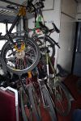
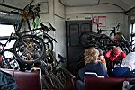
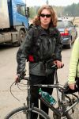
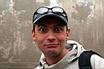
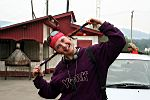
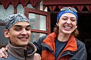
После перекуса надо ехать мимо деревни Шаманка и мимо пионерских лагерей
(возле одного
из них всплыло дежавю из далекого детства, даже запахи те же!). Потом
сделать фотосессию
на Микро Голден Гэйт через Иркут и на живописном красном утесе :)
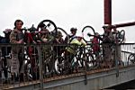
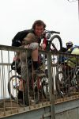
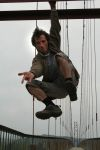
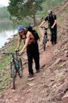
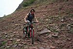
Лесная дорога вдоль Иркута, тропинки, багульник, черемуха. Гамма коричнево-зелёная.
Потом пошли поля в черно-зелёной гамме, с подснежниками и поисками верного
пути.
Прохладная погода, купание в Иркуте отменяется. Ветер быстро сносит пыль с дороги.
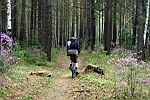
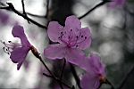
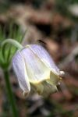
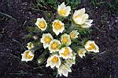
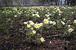
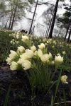
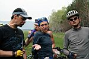
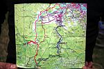
После полей надо проехать деревню Пионерск, в N-ный раз остановиться для поедания
и выпивания содержимого рюкзаков (консервированные ананасы !), подождать
тихоедущих
отдыхающих, пересчитаться на 1-2-3...20-й и штурмовать три подъема, отрываясь на спусках :)
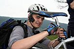
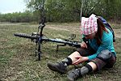
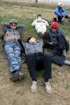
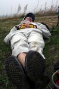
Особенно хорошо надо оторваться на последнем спуске - "отомстить за подъем" на
жесткой гравийке. Потом ищем жэдэ мост, он где-то есть и по нему даже
поезда ездят,
а не только велосипедисты. Немного проехать и заправить организмы жидкостью в
синеглазом павильоне. Дальше можно ехать до Иркутска "пешком", можно и на
электричке от Смоленщины, а можно и до Слюдянки в пустом вагоне...
Думаю, для начала велосезона
достаточно 73-х километров? :)
День Победы - к участникам покатушки привязаны георгиевские
ленточки,
Доктор раздавал "фронтовые 100 грамм", а в электричке - пьяная
молодежь :)
Наши деды знали, за что воевали! С праздником их и Спасибо им!
Май 2007
Текст : Алексей Белокрылов
Фото : Ксения Шультайс aka poZvonoK
Вариант №1 с фотографиями Алексея
Белокрылова
Ссылка по делу - Описание маршрута на сайте Ангара.нет (очень подробно и с точками GPS)